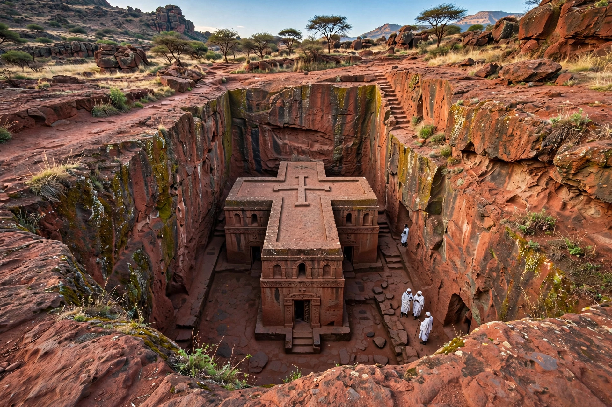

From Wikipedia, the free encyclopedia
| Oriental Orthodox Churches | |
| Type | Eastern Christian communion |
|---|---|
| Separating event | Council of Chalcedon (451) |
| Theology | Miaphysitism; first three ecumenical councils recognised |
| Members (autocephalous churches) | Coptic Orthodox Church, Syriac Orthodox Church, Armenian Apostolic Church, Ethiopian Orthodox Tewahedo Church, Eritrean Orthodox Tewahedo Church, Malankara Orthodox Syrian Church |
| Adherents | c. 60 million worldwide |

The Oriental Orthodox Churches are a communion of Eastern Christian churches that recognise only the first three ecumenical councils — Nicaea (325), Constantinople (381), and Ephesus (431) — and rejected the christological definition of the Council of Chalcedon (451). The schism that followed Chalcedon was the first great division of the Christian Church, a millennium before the East–West Schism of 1054. The communion today comprises six autocephalous churches centred historically in Egypt, Syria, Armenia, Ethiopia, Eritrea, and India, with a worldwide membership of roughly 60 million and large diasporas in Europe, the Americas, and Australia.
Chalcedon defined Christ as one person in two natures, "without confusion, change, division, or separation." Its opponents — heirs of the Alexandrian tradition of Cyril of Alexandria — held to Cyril's formula of "one incarnate nature of God the Word" (mia physis) and judged Chalcedon's language dangerously close to the Nestorian division condemned at Ephesus. Their theology, called miaphysitism, insists on the full divinity and full humanity of the united Christ and is distinct from the monophysitism of Eutyches, which they also reject; nevertheless, their opponents long labelled them "Monophysites," a term the Oriental Orthodox consider a misnomer. Politics compounded doctrine: the Chalcedonian definition was associated with imperial Constantinople, while Egypt, Syria, and Armenia resented Byzantine domination. Figures such as Severus of Antioch and Jacob Baradaeus (from whom the Syriac church is nicknamed "Jacobite") organised enduring parallel hierarchies in the sixth century.
The Coptic Orthodox Church of Alexandria, led by the Pope of Alexandria, serves Egypt's substantial Christian minority and a global diaspora. The Syriac Orthodox Church, led by the Patriarch of Antioch (now resident in Damascus), worships in Syriac (a dialect of Aramaic) and Arabic. The Armenian Apostolic Church, centred at Etchmiadzin under its Catholicos, serves the world's oldest Christian nation — Armenia adopted Christianity in 301 or 314. The Ethiopian Orthodox Tewahedo Church, the largest of the communion with perhaps 36 million members, preserves Ge'ez liturgy, a broader biblical canon, and distinctive practices influenced by its ancient Jewish contacts; it granted autocephaly to the Eritrean Orthodox Tewahedo Church after Eritrean independence. The Malankara Orthodox Syrian Church in India traces its origin to the mission of St Thomas the Apostle in 52 CE.
Twentieth-century dialogue transformed relations with other churches. Unofficial and official consultations with the Eastern Orthodox (1964–1990) produced agreed christological statements concluding that both families confess essentially the same faith in different terminology, though full communion has not been restored. With the Roman Catholic Church, joint declarations — notably Pope Paul VI and Coptic Pope Shenouda III (1973) — affirmed a common Christology, and Oriental Orthodox churches participate in the World Council of Churches. Internally, the Standing Conference of Oriental Orthodox Churches coordinates the communion, whose churches share full communion with one another.